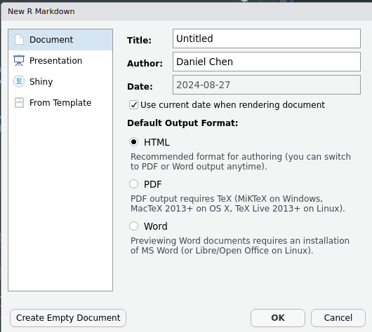
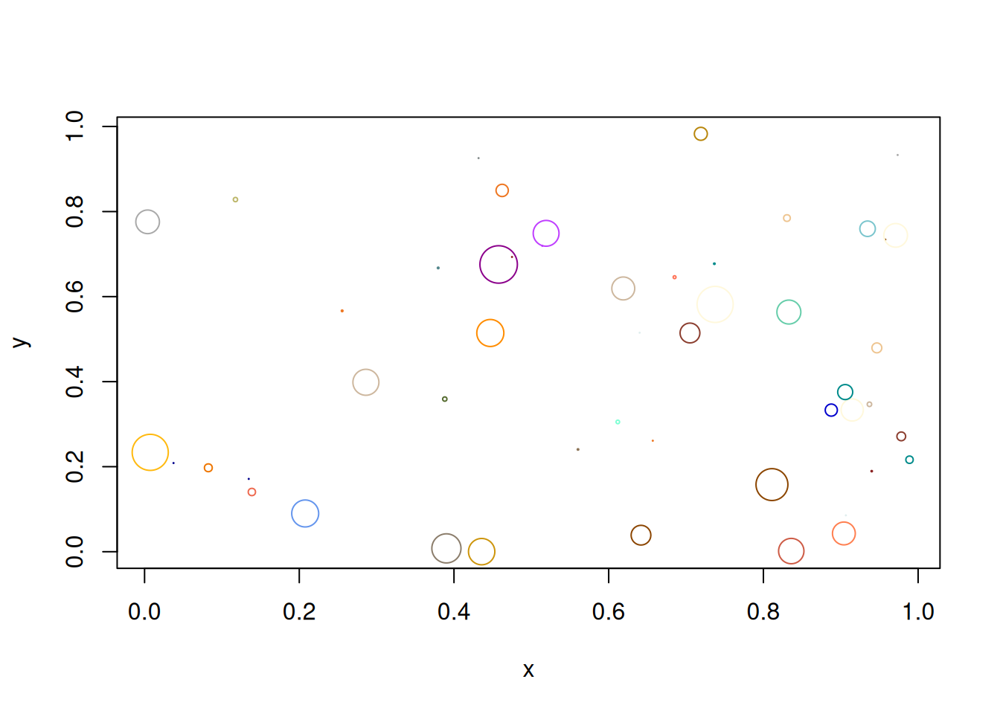

```{r}
3 + 4
```[1] 7.R script and RMarkdown .Rmd interface inside RStudioRStudio is another integrated development environment (IDE), primary used for the R programming language. It has all the same features of JupyterLab, but follows a “Four-Panel data science” layout.

Many concepts in working with RStudio are similar to those in working in Jupyter Lab
You can access RStudio from an online remote server or on a local machine as a web or desktop application.
You can install RStudio Server locally on your machine and access it as as a local web application or connect to an already installed web instance. You can have access to a online version of the RStudio IDE on Posit Cloud (https://posit.cloud/).
If you have already completed the installation instructions, you can run RStudio as a desktop application.
RStudio follows a “four-pane datascience” IDE view:
.R)The top-left corner of the 4-pane data science setup in RStudio is where you will write code in an editor. If you are using an .R script file, you can write your R code in here directly. You can create a new R Script file by going to File > New > R Script. If you want to mix code with prose code, you will need to use RMarkdown .Rmd files.
.Rmd)RMarkdown files typically have .Rmd extension. They allow you to interweave prose with code. The prose text takes markdown formatting, and code is executed in code chunks.
Most of the time in MDS, you will be working with RMarkdown files. You may also see Quarto documents that follow a very similar syntax as RMarkdown files (Fun fact: this website is created with Quarto).
You can create a new RMarkdown file by going to File > New > R Markdown. This will open a new document creation wizard. For now you can leave all the defaults, you can change them later.

When we open a new RMarkdown file it will be pre-populated with a boilerplate template.
There are 3 main parts to an RMarkdown file:
To render an RMarkdown document you can click the Knit button on the IDE. By default, it will render the output specified in your YAML header, but you can also choose to render it to another format (e.g., PDF).
The markdown syntax is the same as you saw with Jupyter Notebook markdown cells
#### Markdown Example: Heading Level Four
- A bullet point
- *Emphasis in italics*
- **Strong emphasis in bold**
- This is a [link to learn more about markdown](https://guides.github.com/features/mastering-markdown/).
- Support for $\LaTeX$ equations:
$$f'(a) = \lim_{x \to a} \frac{f(x) - f(a)}{x-a}$$will be rendered as:
```{r}
3 + 4
```[1] 7```{r}
a = 5
``````{r}
a
```[1] 5For the remainder of this lesson, we’ll assume you are working in an RMarkdown document. If you want to work in an R script, you can use the code directly without the markdown code chunk elements.
To show an example of how plots are rendered, we will use the seaborn plotting package which is a high level interface to the more widely known matplotlib package. This is only to illustrate how plots show up in the notebook, rather than a tutorial on how to plot in Python, so I will not go into details on what these commands mean.
```{r}
# You don't have to understand what is going on in this cell
# it is only to show you how a static plot looks inside RMarkdown
set.seed(42)
N = 50
x = runif(N)
y = runif(N)
cols = round(runif(N) * 100)
area = (2 * runif(N))**2
plot(x, y, cex=area, col=colors()[cols])
```
There are 2 highly recommended setting within RStudio that you should set up to help with reproducibility and making sure that when you “turn things off and turn it back on again” that you actually end up with a clean session.
In the Tools > Global Options > General Tab, you want to uncheck the boxes that open previous files and projects, and also make sure that no .RData is saved when you quit RStudio, and to never save the .RData (this prevents RStudio from loading up previous data when you open it, it does not refer to its ability to load and save data as you use it).